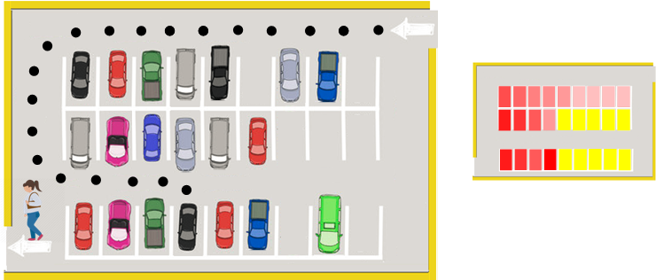
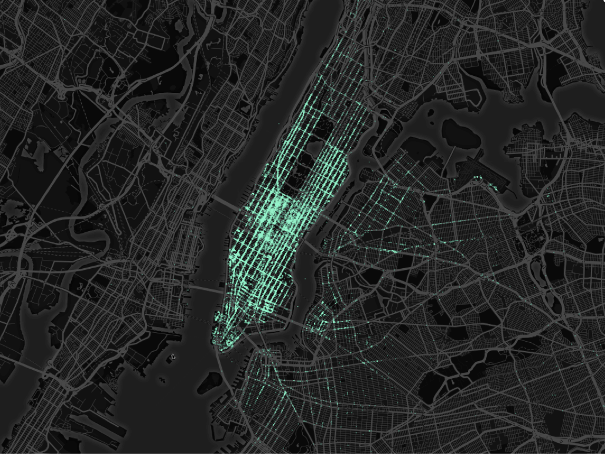
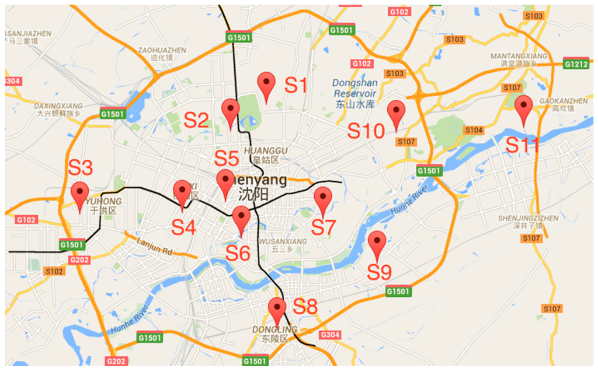

Projects
-

Advised by or work with Prof. Desheng Zhang
Process and analyze multi-source data including taxi, bus, subway and POI
Infer dynamical changes of region functionality
-

Advised by or work with Prof. Liviu Iftode, Ruilin Liu
Model people's parking behaviors
Design parking strategy to shorten searching time and walking time
Estimate parking availability based on parking search paths
Verify the algorithm on both small scale dataset (Rutgers Campus) and large scale dataset (Seattle)
-

-

Advised by or work with Prof. Ruiyun Yu
Propose a random forest based algorithm to infer the air quality using data from air quality mornitor stations, meteorology data, traffic report and poi distribution.